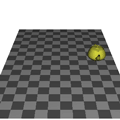
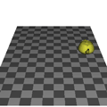
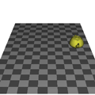

地面の上に置いた物体を， マウスを使ってコントロールするプログラムを作ってみましょう． これまでに作ったプログラムをベースを改造するのが手っ取り早いと思いますが， うまく行かなければ下の手順を参考にしてください． ソースファイル名は prog6.c としてください．
下のプログラムは地面の上に１個のティーポットを静止画で表示します． なんでティーポットなのかというのは置いておいて， これをマウスを使って「ラジコンカー」のように操作できるようにしてください．
#include <stdlib.h>
#include <GL/glut.h>
#define W 6 /* 地面の幅の２分の１ */
#define D 9 /* 地面の長さの２分の１ */
/*
* 地面を描く
*/
static void myGround(double height)
{
const static GLfloat ground[][4] = {
{ 0.6, 0.6, 0.6, 1.0 },
{ 0.3, 0.3, 0.3, 1.0 }
};
int i, j;
glBegin(GL_QUADS);
glNormal3d(0.0, 1.0, 0.0);
for (j = -D; j < D; ++j) {
for (i = -W; i < W; ++i) {
glMaterialfv(GL_FRONT, GL_DIFFUSE, ground[(i + j) & 1]);
glVertex3d((GLdouble)i, height, (GLdouble)j);
glVertex3d((GLdouble)i, height, (GLdouble)(j + 1));
glVertex3d((GLdouble)(i + 1), height, (GLdouble)(j + 1));
glVertex3d((GLdouble)(i + 1), height, (GLdouble)j);
}
}
glEnd();
}
/*
* 画面表示
*/
static void display(void)
{
const static GLfloat lightpos[] = { 3.0, 4.0, 5.0, 1.0 }; /* 光源の位置 */
const static GLfloat yellow[] = { 0.8, 0.8, 0.2, 1.0 }; /* 車の色 */
static GLdouble px = 0.0, pz = 0.0; /* 車の位置 */
static GLdouble r = 0.0; /* 車の方向 */
/* 画面クリア */
glClear(GL_COLOR_BUFFER_BIT | GL_DEPTH_BUFFER_BIT);
/* モデルビュー変換行列の初期化 */
glLoadIdentity();
/* 光源の位置を設定 */
glLightfv(GL_LIGHT0, GL_POSITION, lightpos);
/* 視点の移動（物体の方を奥に移す）*/
glTranslated(0.0, 0.0, -25.0);
glRotated(30.0, 1.0, 0.0, 0.0);
/* シーンの描画 */
myGround(0.0);
glPushMatrix();
glTranslated(px, 1.0, pz);
glRotated(r - 90.0, 0.0, 1.0, 0.0);
glMaterialfv(GL_FRONT, GL_DIFFUSE, yellow);
glutSolidTeapot(1.0);
glPopMatrix();
glFlush();
}
static void resize(int w, int h)
{
/* ウィンドウ全体をビューポートにする */
glViewport(0, 0, w, h);
/* 透視変換行列の指定 */
glMatrixMode(GL_PROJECTION);
/* 透視変換行列の初期化 */
glLoadIdentity();
gluPerspective(30.0, (double)w / (double)h, 1.0, 100.0);
/* モデルビュー変換行列の指定 */
glMatrixMode(GL_MODELVIEW);
}
static void keyboard(unsigned char key, int x, int y)
{
/* ESC か q をタイプしたら終了 */
if (key == '\033' || key == 'q') {
exit(0);
}
}
static void init(void)
{
/* 初期設定 */
glClearColor(1.0, 1.0, 1.0, 1.0);
glEnable(GL_DEPTH_TEST);
glDisable(GL_CULL_FACE);
glEnable(GL_LIGHTING);
glEnable(GL_LIGHT0);
}
int main(int argc, char *argv[])
{
glutInit(&argc, argv);
glutInitDisplayMode(GLUT_RGBA | GLUT_DEPTH);
glutCreateWindow(argv[0]);
glutDisplayFunc(display);
glutReshapeFunc(resize);
glutKeyboardFunc(keyboard);
init();
glutMainLoop();
return 0;
}
操作にはマウスを使いますが，あくまでラジコンなので， ジョイスティックによる操作を模倣するようにしてください． ジョイスティックとはラジコン送信機（プロポ）などに取り付けられている 棒状のコントローラで，例えばこの棒を前に倒すと前進し， 後ろに倒すと後退する，というように操作します．
マウスをこの代用に使うなら， たとえば，マウスを（机の上で）前方にドラッグすれば前進， 後方にドラッグすれば後退， 右にドラッグすれば右折，左にドラッグすれば左折するようにします． マウスカーソルがウィンドウの中心にある時をジョイスティックの中立点 （ニュートラル）とし，そこからのマウスカーソルの変位が大きくなるほど， 速度やハンドルを切る量が増すようにしてみてください． その際，車の前部（というかティーポットの注ぎ口）が， 常に進行方向に向くように工夫しましょう．

なお，これはあくまで「一例」に過ぎません． 自分の思う方法で運転方法を考えてくれれば結構です． ただし，せめて「８の字」くらいはできるようにして下さい． ロールしたりバンク（バイクだと思えば）していたりしたらもっと嬉しいかも．